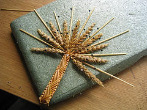

Wednesday, August 17, 2005
Glory Braid

Glory Braid
Originally uploaded by
notionnanny
.
Here is a "glory braid" Dorothy taught me to make using ten pieces of straw.
posted by Notion Nanny at
12:23 AM
1 Comments:
Anonymous said...
hot
5:33 PM
Post a Comment
<< Home
« Home
Previous Posts
Love Tokens
Dorothy with Samples
Room 50
How to Make a Poet
Oak on Oak on Oak
High Point
Historical Market
Wicker Man
Straw Implements
The Book of Straw
1 Comments:
hot
Post a Comment
<< Home